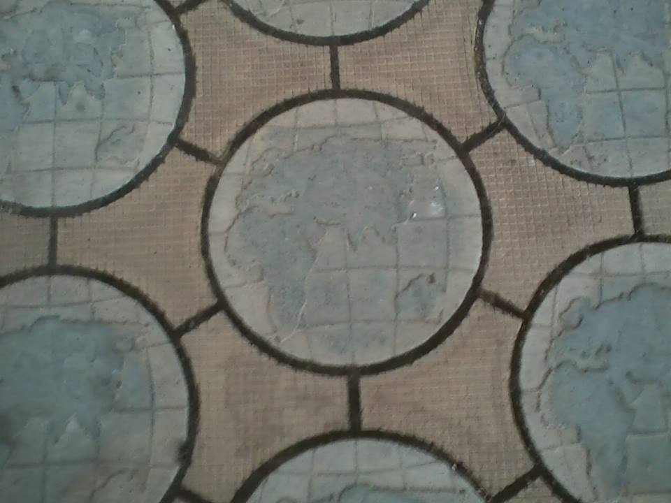
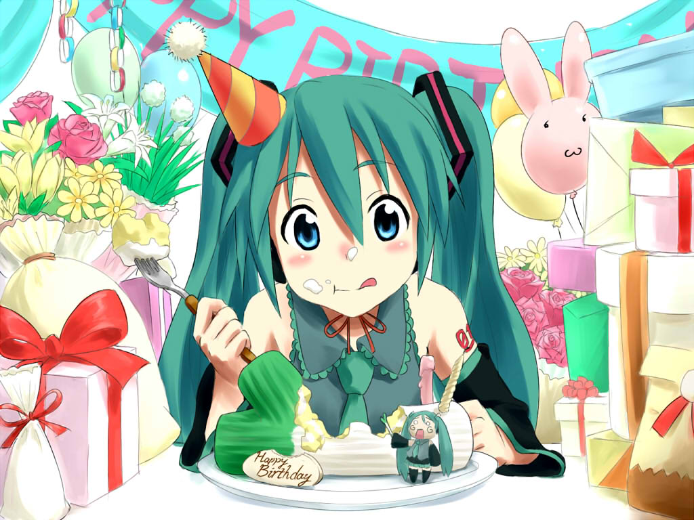

Мику - DJ -рут
7 дней лета :: Руты :: Мику
Страница 9 из 14 •  1 ... 6 ... 8, 9, 10 ... 14
1 ... 6 ... 8, 9, 10 ... 14
Re: Мику - DJ -рут
автор navigator_zon в Ср 24 Июн 2015 - 20:06
- Спойлер:
- Я ж, гады, так расчувствовался, что потом отходил долго! Нет, оно понятно, что они все же как бы воссоединяются, но не в реальности. Но, как я уже сказал, очень эмоционально все воспринял, так что надолго запомниться.
- Спойлер:
- Итоговое воссоединение очень порадовало, да здравствует любовь и все такое, хотя все же получается Семен как взрослый дядька под тридцать будет встречаться с едва совершеннолетней девушкой. И без ожидаемого расписанного конца в духе "жили долго и счастливо".
navigator_zon- Ньюфаг

- Сообщения : 10
Дата регистрации : 2015-06-24
Возраст : 23
Re: Мику - DJ -рут
автор Ornolfr в Пт 26 Июн 2015 - 22:28
Ornolfr- Ньюфаг
- Сообщения : 2
Дата регистрации : 2015-06-21
Re: Мику - DJ -рут
автор dobrii_malii в Пт 26 Июн 2015 - 22:36
Там нужно менее 19 лп, чтобы Мику отказала в танце на 6 день. А потом решающий выбор у склада.Ornolfr пишет:Объясните нубу как выйти на тру-концовку Мику? Играю дрищом под конец набирается лп 19 карма 70. В прохождении как-то не так прописано, мб версия стара.

dobrii_malii- Хикка

- Сообщения : 156
Дата регистрации : 2015-05-30
Re: Мику - DJ -рут
автор Ornolfr в Пт 26 Июн 2015 - 23:38
Так все таки меньше надо? В прохождении написано "Концовки четыре, из них две доступны от 18 лп, ещё 2 от 20 лп." Я так понял, 20 лп и не наберешь.dobrii_malii пишет:Там нужно менее 19 лп, чтобы Мику отказала в танце на 6 день. А потом решающий выбор у склада.Ornolfr пишет:Объясните нубу как выйти на тру-концовку Мику? Играю дрищом под конец набирается лп 19 карма 70. В прохождении как-то не так прописано, мб версия стара.
Ornolfr- Ньюфаг
- Сообщения : 2
Дата регистрации : 2015-06-21
Re: Мику - DJ -рут
автор dobrii_malii в Пт 26 Июн 2015 - 23:40
dobrii_malii- Хикка
- Сообщения : 156
Дата регистрации : 2015-05-30
Re: Мику - DJ -рут
автор Surv в Сб 27 Июн 2015 - 1:46
Я вот когда проходил Мику у меня небыло выбора у склада,а вышел на 4 концовки,мож я чё то путаю,но это так.dobrii_malii пишет:Там нужно менее 19 лп, чтобы Мику отказала в танце на 6 день. А потом решающий выбор у склада.Ornolfr пишет:Объясните нубу как выйти на тру-концовку Мику? Играю дрищом под конец набирается лп 19 карма 70. В прохождении как-то не так прописано, мб версия стара.
Кстате я так и не смог попасть на момент уборки площади со Славей после дискотеки,наверное как раз потому что выбора и небыло,хотя,точно не помню)
Surv- Хикка
- Сообщения : 114
Дата регистрации : 2015-06-06
Re: Мику - DJ -рут
автор openplace в Сб 27 Июн 2015 - 1:52
Хотелось бы сказать пару слов впечатлений о "С новым счастьем", которая впоследствии была изменена и дополнена.
- Спойлер:
- Если абстрагироваться от мира 7ДЛ, то эта концовка - о разрушенных мечтах. О том, что было и уже вряд ли будет когда-либо. Или не будет никогда. Обстоятельства.
Хотя к возрасту Семёна успел нахвататься разных ментальных закладок, эта концовка помогла кое-что почувствовать.
В одной из социальных реклам, когда-то шедших по телевизору, говорилось: "Если у вас что-то болит, значит, вы ещё живёте".
Пройдя концовку, перечитал несколько писем, отправленных и полученных, и это помогло вспомнить пару событий.
2012. Дубна. Незнакомый город, незнакомое место, незнакомые люди. Но начинается мероприятие - и ты осознаёшь, что вот оно, новое, которого так не хватало. Новый мир, совершенно неизведанный. экскурсия и мероприятия идут фоном и создают канву; главным являются люди. С которыми ты вряд ли бы пресёкся у себя дома. Зарождающееся и закрепляющееся ощущение: это - твой круг. Обмен контактами подтверждает это.
2014. Звёздный. Составив в коридоре-холле гостиницы между комнатами диваны буквой "П" и вооружившись принесёнными с кухни чашками с чаем, записями с предыдущих дней и вопросами предстоящего круглого стола мы начинаем мозговой штурм. Наносное за эти дни если и было, то ушло совсем. Оно вернётся потом, не может не вернуться, но сейчас это не важно. После Петербурга-2013 всё наносное, вся шелуха окончательно спадают. И это ощущается восхитительно. Сейчас мы участвуем в интеллектуальном пиршестве. Мы одновременно творцы и участники его. Жадно, не замечая времени, за полночь, пока нас по-доброму не урезонивают и не советуют оставить хотя бы несколько часов для сна, набраться сил для нового дня и круглого стола. Новый день - он же последний.
Последний день и последний вечер как продолжение первого вечера, вечера прибытия. В прибытии было предвкушение; в отбытии - ожидание чего-то. Оставляешь другому записную книжку с самым сокровенным, выкристаллизировавшимся за эти несколько дней. Сидя на кухне и выглядывая в окно на микроавтобус, поджидая остальных, чтобы уже спуститься к саквояжам, оставить в книге посещений свою запись и идти усаживаться на транспорт, и помыслить не можете, что может быть вообще как-то по-другому. Договариваетесь обязательно свидеться в следующем году. Превратить аудиозаписи в тексты, причесать и напечатать.
2015, июнь. Одним росчерком сановнего пера рушится всё. И ты не знаешь, останется ли из тех, кого ты успел узнать за эти годы, на своих местах хоть кто-нибудь. Будут ли возможны подобные встречи, которые ладились в прошлые годы.
"Мы не знаем, что с собой принесёт завтрашний день. Каждый из нас - это буква и слог. Слово слагается из людей."
Сумбур. Возможно, мне не стоило это писать. Возможно, я завтра пожалею о том, что написал это и удалю со стыда. Но в данный момент мне нечего стыдиться.
Да и стоит ли стыдиться, если пройденная концовка явилась средством вспомнить и ощутить заново, даже если платой за это - предательский ком в горле?
Наверное, нет.
Главное: Без открытия новых миров и без воспоминаний о них жить слишком скучно. И слишком ужасно, потому что повседневно. Повседневность способна заесть.

openplace- Хикка
- Сообщения : 111
Дата регистрации : 2015-05-02
Re: Мику - DJ -рут
автор Leonov в Вт 14 Июл 2015 - 19:49
Leonov- Ньюфаг
- Сообщения : 2
Дата регистрации : 2015-07-14
Re: Мику - DJ -рут
автор Nenil в Вт 14 Июл 2015 - 20:06
Может ты на DJ рут не выходишь? Там в столовой Славя прости помочь надо на сцену идти и там надо уговаривать Мику стать DJ на дискотеке.Leonov пишет:Люди, все в +лп делаю, но все равно на сыч выхожу. В чем трабл ?
Nenil- Ньюфаг
- Сообщения : 10
Дата регистрации : 2015-07-12
Re: Мику - DJ -рут
автор Leonov в Вт 14 Июл 2015 - 20:08
Может ты на DJ рут не выходишь? Там в столовой Славя прости помочь надо на сцену идти и там надо уговаривать Мику стать DJ на дискотеке.[/quote]
Ой спасибо, брат! Спас меня.
Leonov- Ньюфаг
- Сообщения : 2
Дата регистрации : 2015-07-14
Re: Мику - DJ -рут
автор HandOfSorrow в Пн 20 Июл 2015 - 21:37
- Автору:
- Два часа назад второй раз прошёл "Моя Мику", первый раз был около двух месяцев назад, почему-то впечатления сейчас гораздо ярче чем были тогда. В плейлисте на репите стоит Jorge Méndez - Cold(где вы только находите такие треки?). Глаза до сих пор иногда мокнут.
Я не мастер расписывать стены текста с своим особо важным мнением, рассказывать что мне особо понравилось или что не понравилось, что я хотел бы поменять или описывать какие чувства у меня вызвал тот или иной момент или поступок персонажа.
Я просто хочу сказать в целом о том что вы делаете, спасибо.
Спасибо, что вы даёте мёртвым людям почувствовать себя живыми.
HandOfSorrow- Сыч

- Сообщения : 32
Дата регистрации : 2015-05-30
Re: Мику - DJ -рут
автор Nenil в Вт 21 Июл 2015 - 15:04
Nenil- Ньюфаг
- Сообщения : 10
Дата регистрации : 2015-07-12
Re: Мику - DJ -рут
автор Lansar_Skavana в Вт 21 Июл 2015 - 15:05
HandOfSorrow пишет:
- Автору:
Я не мастер расписывать стены текста с своим особо важным мнением, рассказывать что мне особо понравилось или что не понравилось, что я хотел бы поменять или описывать какие чувства у меня вызвал тот или иной момент или поступок персонажа.
Я просто хочу сказать в целом о том что вы делаете, спасибо.
Спасибо, что вы даёте мёртвым людям почувствовать себя живыми.
Говоря известной фразой одной девочки "И кто в этом виноват?"

Lansar_Skavana- Хикка
- Сообщения : 211
Дата регистрации : 2015-04-12
Re: Мику - DJ -рут
автор Lansar_Skavana в Пн 27 Июл 2015 - 16:15
Lansar_Skavana- Хикка
- Сообщения : 211
Дата регистрации : 2015-04-12
Re: Мику - DJ -рут
автор dobrii_malii в Пн 27 Июл 2015 - 16:22
У Мику всего один рут, перепутать сложно. А если речь о концовке, то я что-то не припомню такой.Lansar_Skavana пишет:Жители форума, распишите мне пошагово как выйти на рут с Мику, где Семьон в конце замерзает.
dobrii_malii- Хикка
- Сообщения : 156
Дата регистрации : 2015-05-30
Re: Мику - DJ -рут
автор Lansar_Skavana в Пн 27 Июл 2015 - 18:33
dobrii_malii пишет:У Мику всего один рут, перепутать сложно. А если речь о концовке, то я что-то не припомню такой.Lansar_Skavana пишет:Жители форума, распишите мне пошагово как выйти на рут с Мику, где Семьон в конце замерзает.
Моя мику коль мне память не изменяет.
Lansar_Skavana- Хикка
- Сообщения : 211
Дата регистрации : 2015-04-12
Re: Мику - DJ -рут
автор 7dl-kun в Пн 27 Июл 2015 - 18:54

7dl-kun- Находка для шпиона

- Сообщения : 3026
Дата регистрации : 2014-09-07
Откуда : здесь столько наркоманов?
Re: Мику - DJ -рут
автор Lansar_Skavana в Пн 27 Июл 2015 - 22:34
7dl-kun пишет:У Мику концовки четыре - Встреча в Японии, встреча у Семёна, Встреча в Совёнке и новый год у алтаря. Нет так концовок, где Семён замерзает.
Новый год у алтаря, вот на эту концовку я и не выходил еще.
Lansar_Skavana- Хикка
- Сообщения : 211
Дата регистрации : 2015-04-12
Re: Мику - DJ -рут
автор 7dl-kun в Пн 27 Июл 2015 - 23:13
- Спойлер:
ЛП меньше 18, на выбор, либо тырим бритву, либо не помогаем Славе, либо не идём смотреть газету.
7dl-kun- Находка для шпиона
- Сообщения : 3026
Дата регистрации : 2014-09-07
Откуда : здесь столько наркоманов?
Re: Мику - DJ -рут
автор Мурфин в Вт 28 Июл 2015 - 12:32
Lansar_Skavana пишет:7dl-kun пишет:У Мику концовки четыре - Встреча в Японии, встреча у Семёна, Встреча в Совёнке и новый год у алтаря. Нет так концовок, где Семён замерзает.
Новый год у алтаря, вот на эту концовку я и не выходил еще.
Самая сильная концовка из всех в моде( на слезу пробила(

Мурфин- Сыч
- Сообщения : 55
Дата регистрации : 2015-06-12
Re: Мику - DJ -рут
автор Imperfect Machine в Пт 31 Июл 2015 - 21:24

Imperfect Machine- Ньюфаг
- Сообщения : 6
Дата регистрации : 2015-07-31
7dl-kun- Находка для шпиона
- Сообщения : 3026
Дата регистрации : 2014-09-07
Откуда : здесь столько наркоманов?
Re: Мику - DJ -рут
автор Imperfect Machine в Сб 1 Авг 2015 - 15:16
Imperfect Machine- Ньюфаг
- Сообщения : 6
Дата регистрации : 2015-07-31
Re: Мику - DJ -рут
автор Demiurge-kun в Чт 6 Авг 2015 - 11:01
Как всегда был он Борисом Санычем, так им и стался же! Да и спрайт при нем. Вы о чем, сударь?IM-kun пишет:Сейчас уже пофиксили, но спрайта с физруком всё ещё нет.

Demiurge-kun- Хикка
- Сообщения : 216
Дата регистрации : 2014-09-13
Re: Мику - DJ -рут
автор 7dl-kun в Пн 31 Авг 2015 - 9:29
- Спойлер:

7dl-kun- Находка для шпиона
- Сообщения : 3026
Дата регистрации : 2014-09-07
Откуда : здесь столько наркоманов?
Страница 9 из 14 • 1 ... 6 ... 8, 9, 10 ... 14
7 дней лета :: Руты :: Мику